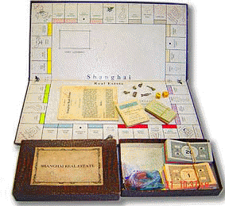

Shanghai Real Estate board (full view)
Phil Orbanes collection photograph. The board follows the Parker Brothers layout exactly, with Shanghai streets replacing Atlantic City names and shipping lines replacing railroads.
Related Variant
A Parker Brothers pirate: the other Shanghai Monopoly — modeled on the American board, not the British one.
1930s Shanghai produced not one but two distinct pirated Monopoly variants. Shanghai Millionaire — the main subject of this project — was modeled on the British Waddington's London edition. Shanghai Real Estate, the subject of this page, was a direct unauthorized copy of the American Parker Brothers 1935 edition. Both replaced Atlantic City or London streets with Shanghai streets, but they made different design choices at every point where the parent editions diverged.
The two versions share 11 of 22 property streets, but differ in their cheapest properties, their transit squares, their tax squares, and their source-model logic. Together, they form a natural experiment: two independent localizations of the same game design, made in the same city within a few years of each other.
| Feature | Shanghai Real Estate | Shanghai Millionaire |
|---|---|---|
| Estimated date | ~1937 | ~1938–1940 |
| Source model | Parker Brothers (US 1935) | Waddington's (UK London) |
| Currency | $ (US Dollar prices) | £ (Pound Sterling prices) |
| Transit squares | 4 shipping lines (real companies) | 4 railway stations (N/S/E/W) |
| Luxury tax square | "Your Night Out" ($35) | "Super Tax" (£100) |
| Cheapest properties | Rubicon Rd, Mac Leod Rd (western outskirts) | Avenue Haig, Hart Road (inner west) |
| Shared streets | 11 of 22 | |
The Shanghai Real Estate board, from the Phil Orbanes collection, photographed by themonopolist.net.

Phil Orbanes collection photograph. The board follows the Parker Brothers layout exactly, with Shanghai streets replacing Atlantic City names and shipping lines replacing railroads.
Complete board reading from GO, following the direction of play. All 22 property names verified against board photographs and Veldhuis's catalogue. Prices match the 1935 Parker Brothers edition exactly.
| # | Type | Board Text | Today / Notes | Price |
|---|---|---|---|---|
| 1 | GO | GO (Collect $200 Salary) | — | — |
| 2 | Street | Rubicon Road | 罗别根路 → 哈密路 (western outskirts) | $60 |
| 3 | Community Chest | Community Chest | — | — |
| 4 | Street | Mac Leod Road | 麦克利奥路 → 淮阴路 (western outskirts) | $60 |
| 5 | Tax | Income Tax (Pay 10% or $200) | — | 10%/$200 |
| 6 | Shipping Line | Blue Funnel Line | 蓝烟囱轮船公司 (British) | $200 |
| 7 | Street | Columbia Circle | 哥伦比亚住宅圈 → 上生·新所 | $100 |
| 8 | Chance | Chance | — | — |
| 9 | Street | Great Western Road | 大西路 → 延安西路 | $100 |
| 10 | Street | Avenue Foch | 福煦路 → 延安中路 (French Concession) | $120 |
| 11 | Jail | In Jail / Just Visiting | — | — |
| 12 | Street | Route de Say-Zoong | French Concession; modern name unconfirmed * | $140 |
| 13 | Utility | Electric Company | — | $150 |
| 14 | Street | Avenue Petain | 贝当路 → 衡山路 (French Concession) | $140 |
| 15 | Street | Avenue Joffre | 霞飞路 → 淮海中路 (French Concession) | $160 |
| 16 | Shipping Line | Dollar S.S. Line | 大来轮船公司 (American; renamed APL Aug 1938) | $200 |
| 17 | Street | Honan Road | 河南路 → 河南中路/南路 | $180 |
| 18 | Community Chest | Community Chest | — | — |
| 19 | Street | Canton Road | 广东路 (沿用) | $180 |
| 20 | Street | Hankow Road | 汉口路 (沿用) | $200 |
| 21 | Free Parking | Free Parking | — | — |
| 22 | Street | Kiangse Road | 江西路 → 江西中路 | $220 |
| 23 | Chance | Chance | — | — |
| 24 | Street | Soochow Road | 苏州路 → 南苏州路 (along Soochow Creek) | $220 |
| 25 | Street | Peking Road | 北京路 → 北京东路 | $240 |
| 26 | Shipping Line | N.D.L. S.S. Co. | 北德意志劳埃德 (German) | $200 |
| 27 | Street | Bubbling Well Road | 静安寺路 → 南京西路 | $260 |
| 28 | Street | Yu Yuen Road | 愚园路 (沿用) | $260 |
| 29 | Utility | Water Works | — | $150 |
| 30 | Street | West End Gardens | Western gardens district; exact referent unconfirmed * | $280 |
| 31 | Go To Jail | Go To Jail | — | — |
| 32 | Street | Avenue Edward VII † | 爱多亚路 → 延安东路 | $300 |
| 33 | Street | Szechuen Road † | 四川路 → 四川中路 | $300 |
| 34 | Community Chest | Community Chest | — | — |
| 35 | Street | Broadway | 百老汇路 → 大名路/东大名路 (Hongkew) | $320 |
| 36 | Shipping Line | China Merchants S. & N. Co. | 轮船招商局 (Chinese) | $200 |
| 37 | Chance | Chance | — | — |
| 38 | Street | Nanking Road | 南京路 → 南京东路 ("Great Road No. 1") | $350 |
| 39 | Tax | Your Night Out (Pay $35.00) | Replaces Parker's "Luxury Tax" ($75) — see below | $35 |
| 40 | Street | The Bund | 外滩 → 中山东一路 | $400 |
† Board photograph severely faded; name confirmed from Veldhuis catalogue (worldofmonopoly.com). * See Open Questions below.
| Color | Streets | Price Range | Parker Equivalent |
|---|---|---|---|
| Rubicon Road, Mac Leod Road | $60 | Mediterranean / Baltic | |
| Columbia Circle, Great Western Road, Avenue Foch | $100–120 | Oriental / Vermont / Connecticut | |
| Route de Say-Zoong, Avenue Petain, Avenue Joffre | $140–160 | St. Charles / States / Virginia | |
| Honan Road, Canton Road, Hankow Road | $180–200 | St. James / Tennessee / New York | |
| Kiangse Road, Soochow Road, Peking Road | $220–240 | Kentucky / Indiana / Illinois | |
| Bubbling Well Road, Yu Yuen Road, West End Gardens | $260–280 | Atlantic / Ventnor / Marvin Gardens | |
| Avenue Edward VII, Szechuen Road, Broadway | $300–320 | Pacific / N. Carolina / Pennsylvania | |
| Nanking Road, The Bund | $350–400 | Park Place / Boardwalk |
Key finding: The price structure is identical to the 1935 Parker Brothers edition — $60 start, $400 top, Income Tax at 10%/$200, transit squares at $200, Electric Company at $150. This is hard evidence that Shanghai Real Estate copied the American board directly, not the British Waddington version (which uses £ currency and different tax amounts).
In the original Parker Brothers edition, the square between Park Place and Boardwalk (positions 38–40) is "Luxury Tax" — pay $75. Shanghai Real Estate replaces it with "Your Night Out" — pay $35. This is the only square on the entire board where the pirate designer changed not just the name but the concept and the amount.
"A night out" — a night on the town — was a recognizable expense category in 1930s Shanghai, a city internationally famous for its nightlife. The designer is saying: in this city, your "luxury" isn't a diamond ring or a yacht; it's an evening at the dance halls, cabarets, and restaurants of Nanking Road or the French Concession. The halved amount ($35 vs. $75) may wink at the idea that a Shanghai night out, while not free, was cheaper than the formal luxury the American board had in mind — or it may simply reflect a lighter, more playful tone.
Either way, it is a deliberate, witty localization: the only point on the board where the pirate moved beyond mechanical copying to inject a specifically Shanghai voice.
Where Parker Brothers has four railroads and Waddington has four London railway stations, Shanghai Real Estate substitutes four real shipping companies — reflecting a treaty port whose arteries were maritime, not rail.
🇬🇧 British · Alfred Holt & Co. (founded 1866, Liverpool). Major UK–East Asia shipping operator. Sailors included Chinese crewmen, indirectly forming Liverpool's early Chinese community.
🇺🇸 American · Robert Dollar Co. (founded 1901). Trans-Pacific leader. Renamed American President Lines in August 1938 — the board still says "Dollar," suggesting it was printed before that date.
🇩🇪 German · Norddeutscher Lloyd (founded 1857, Bremen). Bremen–East Asia routes; by 1907 operated Shanghai–Hankow service. One of the largest German shipping companies.
🇨🇳 Chinese · 轮船招商局 (founded 1872, Shanghai). China's first joint-stock steamship enterprise, founded by Li Hongzhang. Headquartered in Shanghai.
Not random: The four companies represent the four major shipping powers in 1930s Shanghai — British, American, German, and Chinese. This is a miniature portrait of the treaty-port power structure, and one of the few design choices the pirate made that was not direct copying from either parent edition.
Dating clue: The Dollar Line was forcibly reorganized into American President Lines in August 1938 and legally could no longer use the "Dollar" name. The board still reads "Dollar S.S. Line," providing independent evidence that Shanghai Real Estate was printed before August 1938 — consistent with Veldhuis's ~1937 dating.
Shanghai Real Estate's cheapest two properties — Rubicon Road (now Hami Road) and Mac Leod Road (now Huaiyin Road) — are both in the western extraterritorial road-building zone (越界筑路区), far from the settlement center. Shanghai Millionaire's cheapest two — Avenue Haig (now Huashan Road) and Hart Road (now Changde Road) — are also western, but closer to the settlement's inner edge. Real Estate's gradient is steeper: it reaches further out into the periphery for its lowest tier.
Does this more radical property hierarchy mean Real Estate was produced later than Millionaire — the product of a more mature understanding of Shanghai's property market?
The evidence points the other way. The Dollar Line name gives Real Estate a terminus ante quem of August 1938, and Veldhuis dates it to ~1937. Shanghai Millionaire is dated ~1938–1940. Real Estate appears to be the earlier game, not the later one.
The "more radical" property selection is better explained by differences in design philosophy than in chronology:
In short: the steeper property gradient is a design choice consistent with the Parker Brothers model and a more adventurous designer — not evidence of later production. The hard dating evidence (Dollar Line) confirms Real Estate came first.
22 properties each, 11 shared. Both boards agree on the top two (Nanking Road + The Bund) — independently confirming the ceiling of Shanghai's property market.
| Color | Shanghai Real Estate | Shanghai Millionaire | Shared? |
|---|---|---|---|
| Rubicon Road ($60) | Avenue Haig ($60) | — | |
| Mac Leod Road ($60) | Hart Road ($60) | — | |
| Columbia Circle ($100) | Avenue Road ($100) | — | |
| Great Western Road ($100) | Great Western Road ($220) | ✓ | |
| Avenue Foch ($120) | Yu Ya Ching Road ($100) | — | |
| — | Peking Road ($120) | ✓ (diff. group) | |
| Route de Say-Zoong ($140) | Tientsin Road ($140) | — | |
| Avenue Petain ($140) | Honan Road ($140) | ✓ (diff. group) | |
| Avenue Joffre ($160) | Ningpo Road ($160) | — | |
| Honan Road ($180) | Avenue Petain ($180) | ✓ (diff. group) | |
| Canton Road ($180) | Avenue Roi Albert ($180) | — | |
| Hankow Road ($200) | Avenue Joffre ($200) | ✓ (diff. group) | |
| Kiangse Road ($220) | Great Western Road ($220) | ✓ (diff. group) | |
| Soochow Road ($220) | Yu Yuen Road ($220) | ✓ (diff. group) | |
| Peking Road ($240) | Connaught Road ($240) | — | |
| Bubbling Well Road ($260) | Hardoon Road ($260) | — | |
| Yu Yuen Road ($260) | Seymour Road ($260) | ✓ (diff. group) | |
| West End Gardens ($280) | Bubbling Well Road ($280) | ✓ (diff. group) | |
| Avenue Edward VII ($300) | Kiukiang Road ($300) | — | |
| Szechuen Road ($300) | Kiangse Road ($300) | ✓ (diff. group) | |
| Broadway ($320) | Szechuen Road ($320) | ✓ (diff. group) | |
| Nanking Road ($350) | Nanking Road ($350) | ✓ | |
| The Bund ($400) | The Bund ($400) | ✓ |
Shared ceiling: Both boards independently place Nanking Road ($350) and The Bund ($400) as the two most expensive properties — two independent localizations confirming the same market hierarchy. Note also that several shared streets appear in different color groups: the two designers disagreed on relative ranking even when they chose the same streets.